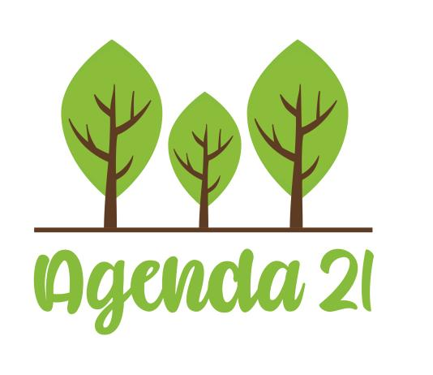

¿Qué es La Agenda 21?
La Agenda 21 es un plan de acción global adoptado en la Cumbre de la Tierra de las Naciones Unidas en Río de Janeiro en 1992. Fue diseñada como un compromiso internacional para abordar los desafíos ambientales, económicos y sociales que enfrenta el mundo. La Agenda 21 se enfoca en promover el desarrollo sostenible, que implica encontrar un equilibrio entre el crecimiento económico, la protección del medio ambiente y el bienestar social.
¿Cuál es el objetivo de La Agenda 21?
El objetivo principal de la Agenda 21 es promover el desarrollo sostenible a nivel global. El desarrollo sostenible se define como un proceso que busca equilibrar el crecimiento económico, la protección ambiental y el bienestar social, de manera que las necesidades de las generaciones presentes se satisfagan sin comprometer la capacidad de las generaciones futuras para satisfacer sus propias necesidades. En ese sentido, los objetivos específicos de la Agenda 21 incluyen:
- Conservación del medio ambiente: Promover prácticas que reduzcan la contaminación del aire y el agua, conserven los ecosistemas, protejan la biodiversidad y minimicen el agotamiento de los recursos naturales.
- Desarrollo económico sostenible: Fomentar un crecimiento económico que sea equitativo y que mejore la calidad de vida de las personas sin agotar los recursos naturales ni dañar el medio ambiente.
- Igualdad y equidad social: Buscar la igualdad de género y la equidad social, garantizando que todas las personas tengan acceso a recursos y oportunidades.
- Participación y colaboración: Involucrar a gobiernos, comunidades locales, organizaciones no gubernamentales, el sector privado y otros actores en la toma de decisiones y en la implementación de estrategias sostenibles.
- Educación y conciencia: Promover la educación ambiental y la conciencia pública sobre la importancia de la sostenibilidad.
- Planificación urbana sostenible: Fomentar el desarrollo de ciudades y comunidades sostenibles que sean eficientes en el uso de recursos y amigables con el medio ambiente.
Para obtener más información, puedes visitar el siguiente sitio web sobre La Agenda 21.
